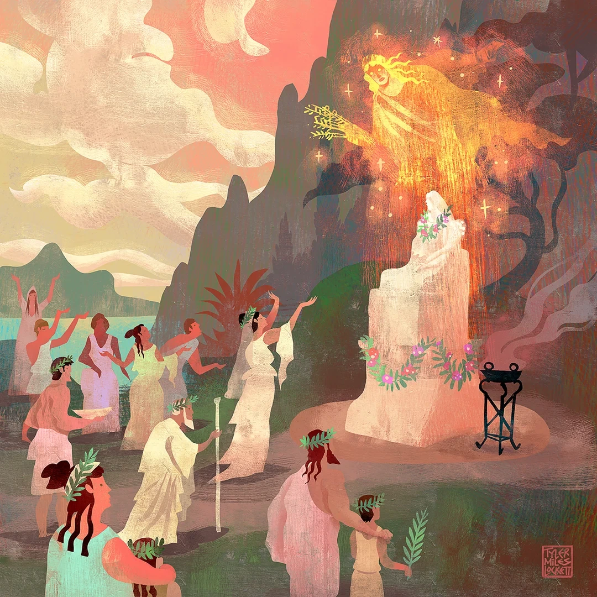

На столе уже стояли семь фигурок женщин, причём на первый взгляд между ними было не так уж много общего. Одна держала лук, возле другой стоял олень, третья была закутана в тяжёлое одеяние, украшенное зверями, четвёртая несла факел. Кассия предложила студентам присмотреться и назвать богинь, которых они узнают. Охотницу с луком, конечно, сразу записали в Артемиды, зато остальных успели назвать и Деметрой, и Герой, и Гекатой. Особенно всех озадачила неподвижная фигура с высоким головным убором. Кассия выслушала предложения, улыбнулась и одним движением палочки написала над всеми семью одно имя: «Артемида».
— Ни один из вас не ошибся с охотницей, но вот остальные тоже относятся к Артемиде. И это не семь сестёр, случайно названных одинаково. Мы обычно вспоминаем богиню с луком, колчаном и оленем, потому что именно такой её часто изображают и в книгах, и в современном искусстве. Только древние греки не были обязаны видеть её исключительно так. Где-то Артемиду просили помочь с рождением ребёнка, где-то ей приносили жертвы перед сражением, а в одном городе она выглядела настолько необычно, что по привычным картинкам её не узнать. Сегодня попробуем разобраться, откуда берётся всё это разнообразие и почему у одного бога вообще может быть столько разных лиц.
Прежде чем отправляться по греческим городам, нам пригодится одно слово — «эпиклеза». Так называют дополнительное культовое имя божества, под которым ему могли поклоняться в определённом месте или по определённому поводу. Здесь легко запутаться с поэтическими эпитетами. Поэт может назвать Афину совоокой, Геру волоокой, а Аполлона сребролуким, но красивое определение само по себе ещё не означает, что где-то существовал отдельный культ с таким именем. Эпиклеза интересна именно тем, что за ней могли стоять настоящие молитвы, праздники, алтари, посвящения и вполне повседневные людские заботы.
— Возьмём Зевса, с ним обычно всё просто: молния, гром, трон, семейная жизнь, в которой сам чёрт ногу сломит. Но представьте, что к вам в дом пришёл гость, вы собираетесь дать важную клятву или переживаете за имущество. Всё это тоже могло иметь отношение к Зевсу, причём не обязательно к одному и тому же его культовому имени.
Кассия поставила рядом с именем Зевса четыре карточки. Зевс Ксений был связан с гостеприимством и защитой гостя; Зевс Горкий — с клятвами, которые люди давали друг другу; Зевс Геркей — с домашней оградой и семейным пространством; Зевс Ктесий — с имуществом и достатком. Если к вам приехал незнакомец, важна одна сторона жизни, если вы клянётесь выполнить обещание — другая, а когда беспокоитесь о сохранности домашних запасов — третья. Это не значит, что у греков было четыре самостоятельных Зевса, которые делили между собой обязанности. Дополнительное имя уточняло, в какой связи человек обращается к известному ему божеству.
— А Гестия тогда чем занималась? — раздался вопрос с одной из парт. — Она же тоже связана с домом.
— Конечно! Только почему мы решили, что домом должен заниматься кто-то один? Вы же не удивляетесь, что в Хогвартсе есть и эльфы, которые следят за хозяйством, и преподаватели, которые учат студентов, и директорат, который за всё это отвечает. У каждого свои заботы, хотя речь идёт об одном и том же замке. У греков было примерно так же: разные божества могли покровительствовать одной стороне человеческой жизни, причём их обязанности далеко не всегда имели чёткие границы. Поэтому Гестия совершенно спокойно уживалась с Зевсом. В целом, это не удивительно. То же самое касалось гораздо более крупных дел. Люди могли обращаться за исцелением к Аполлону или Асклепию, а во время войны вспоминать не только Ареса, но и Афину, Зевса и Артемиду в некоторых её местных обликах.
Кассия вернулась к семи фигурам Артемиды и указала на одну из них. На доске появилась карта Аттики, области вокруг Афин, а на восточном побережье — название «Браврон». Здесь находилось важное святилище Артемиды, и для местных жителей она была совсем не одной только охотницей. Богиню связывали с девочками, их взрослением, переходом к браку, а также с беременностью и родами. Люди оставляли в святилище посвящения, в том числе женскую одежду; одним из самых известных обрядов была арктейя, участниц которой называли «медведицами».
— Медведицами? — переспросил кто-то, и Кассия кивнула, доставая небольшую фигурку медведя. — Да, именно медведицами. Почему этот образ оказался здесь настолько важен, объясняли по-разному. По одному из поздних рассказов при святилище жила медведица, которая ранила игравшую с ней девушку. Родственники убили животное, за что на Аттику обрушилось бедствие, и тогда через оракул людям велели посвящать девочек Артемиде перед замужеством. Получилось не самое приятное начало истории, но такие рассказы нередко появлялись, чтобы объяснить уже существующий обряд. Поэтому я бы не советовала воспринимать историю с медведицей как достоверное сообщение о том, с чего всё когда-то началось.
Участниц арктейи мы знаем не только по поздним пересказам. На аттических вазах сохранились изображения девочек, связанных с обрядами Артемиды, а Аристофан в «Лисистрате» вкладывает в уста афинянки воспоминание о том, как та «была медведицей» в Бравроне. Однако далеко не все подробности обряда нам известны: об отдельных возрастных границах, одежде и действиях исследователи спорят до сих пор. Где-то в популярных изложениях можно прочитать, что девочки надевали медвежьи шкуры, но уверенно восстанавливать весь ритуал по одному красивому описанию нельзя. И без того мы видим достаточно: Артемида здесь участвовала в жизни семьи там, где привычная картинка с охотой не подсказывает нам ни-че-го.
— Между прочим, девственная богиня, которая сама не вступает в брак и не рожает детей, при этом связана с замужеством и родами. Сначала звучит странно, правда? Но, когда речь идёт об опасных переменах в человеческой жизни, её помощь вполне понятна. Артемида охраняла не только леса и животных.
Теперь Кассия указала на другое изображение богини. В Аттике Артемиду почитали также под именем Агротеры, связанным с дикой местностью и охотой. Однако здесь к охотничьим ассоциациям прибавлялась военная сторона: спартанцы приносили ей коз перед сражениями, а афиняне связывали её культ с победой при Марафоне. По одному античному рассказу они обещали пожертвовать богине козу за каждого убитого противника, но после битвы счёт оказался настолько велик, что жертвоприношение пришлось сделать ежегодным.
Кассия предложила подумать, почему охота могла оказаться рядом с войной: и там и там были оружие, преследование, риск, кровь и выход в пространство, где человек не чувствует себя в полной безопасности. Поэтому Артемида Агротера не переставала быть охотницей, когда к ней обращались воины.
— И вот вам уже две Артемиды из одной области Греции: в Бравроне она связана с девочками и переходом к взрослой жизни, а в другом культе получает жертвы перед сражением. Я бы не стала утверждать, что жители Аттики каждый раз представляли себе двух разных богинь. Просто жизнь у людей была гораздо сложнее, чем мы можем представить.
Но самый заметный контраст ожидал студентов дальше. Кассия взяла фигурку в тяжёлом уборе и поставила её рядом с Артемидой-охотницей. Первая происходила из образов Артемиды Эфесской, которую почитали в Эфесе, греческом городе на побережье Малой Азии. Её изображения действительно мало похожи на девушку с колчаном: высокий головной убор, плотное одеяние, ряды животных и украшений, неподвижная поза. В Эфесе греческое имя богини соединилось с гораздо более древним местным культом, поэтому перед нами не просто охотница, которую художник решил нарядить поинтереснее.
— А вот эти округлые украшения на груди, — Кассия подвинула фигурку ближе, — предмет отдельной головной боли для исследователей. Их объясняли и как груди, и как яйца, и как плоды, и как части жертвенного убранства. Единого бесспорного ответа нет, так что если где-нибудь увидите подпись «это совершенно точно означает…», лучше сначала проверьте, откуда такая уверенность. Мне, конечно, тоже хотелось бы однажды объявить все древние загадки решёнными, но тогда половину наших будущих домашних заданий пришлось бы отменить…
После Эфеса Кассия убрала фигурки и выложила на стол несколько других предметов: монету, изображение надписи на камне, маленькую терракотовую статуэтку и рельеф. Мифы помогают понять, что рассказывали о богах, однако сведения о том, как им поклонялись, сохранились не только в произведениях поэтов. Археологические находки, надписи, изображения на монетах, алтари и посвятительные предметы позволяют увидеть то, чего автор известного мифа мог вообще не упомянуть. А ещё у нас есть путешественники вроде Павсания, который во II веке нашей эры записывал, какие святилища, статуи и местные рассказы встречались ему в греческих землях. Правда, и здесь не стоит забывать, что он писал о том, что видел или слышал в своё время, а не составлял полный список всех культов за тысячу лет.

— Чтобы это не выглядело так, будто свои особенные боги были только у Афин и Эфеса, заглянем ещё в одно место. Кто-нибудь слышал об Ольвии? Это древнегреческий город на северо-западном побережье Чёрного моря, на территории современной Украины. Его основали выходцы из Милета, и там очень хорошо видно, как менялось значение разных культовых имён одного божества по мере жизни самого города.
На карте возникло имя Аполлона, а рядом с ним — стрела. В ранней Ольвии важное место занимал Аполлон Иетрос, то есть Врач, связанный с защитой от бедствий и заботой о переселенцах. Его почитали и в других греческих городах Причерноморья. Археологам известны необычные ранние денежные знаки в форме стрел, которые исследователи связывают с Аполлоном; позднее в Ольвии использовали знаменитые бронзовые монеты-«дельфины». Важным стал и культ Аполлона Дельфиния, известный ионийскому миру и Милету, откуда пришли основатели Ольвии. У него было святилище на городском священном участке — теменосе.
— Только давайте не сделаем поспешный вывод, что деньги в виде дельфинов автоматически доказывают всё, что нам хочется сказать о культе Дельфиния. Монеты, имена богов и святилища нужно рассматривать вместе, а не подбирать абы как. Но сам пример очень хорош: город рос, менялся, вступал в отношения с соседями, а его жители продолжали обращаться к Аполлону по разным поводам.
В более поздних надписях Ольвии встречается Аполлон Простат — Защитник; известны и другие его местные имена, в том числе Ликей, Борей и Таргелий. Не все эти культы были одинаково значимы во все века существования города, а потому список эпиклез сам по себе ещё не расскажет нам, каким был Аполлон для конкретного человека. Гораздо интереснее спросить, когда появляется определённое имя, где найдено посвящение, кто мог его оставить и что в этот период происходило с городом. Тогда мы начинаем узнавать не только о боге, но и о людях, которые к нему обращались.
— Получается, они всё-таки считали, что это один Аполлон? — спросил студент с заднего ряда. — Во многих случаях именно так. Но я бы не превращала это в железное правило для каждого святилища на карте. Греческие города существовали столетиями, общались с соседями, перенимали образы, а иногда под знакомым греческим именем оказывался местный культ с собственной долгой историей. Помните Эфесскую Артемиду? С ней всё заметно сложнее, чем с четырьмя эпиклезами Зевса, которые мы разобрали в самом начале. Поэтому мы и смотрим не только на имя, но и на место, изображения, обряды и всё, что сумели сохранить источники.
Для последнего примера Кассия вернулась к Афине. Её часто называют богиней мудрости, и это, конечно, не ошибка, но Афина Эргана связана с ремеслом и трудом, Полиада — с городом и его защитой, а Промахос напоминает о воинственной стороне богини. Один знакомый образ оказывается только частью гораздо более широкой картины, и чем ближе мы знакомимся с древними городами, тем труднее продолжать описывать богов несколькими словами.
Кассия обвела взглядом оставшиеся на столе фигурки, карточки и монеты, а затем подвинула их в сторону, освободив место для небольшой модели Хогвартса. На ней легко узнавались башни, двор, теплицы и озеро.
— Вот скажите, что такое Хогвартс? Школа магии, разумеется, и ответ совершенно правильный. Но для первокурсника, который только приехал сюда, для преподавателя, который проводит здесь половину жизни, для эльфа, для привидения и для выпускника, вспоминающего свои приключения, это будут очень разные места по смыслу. При этом замок не раздваивается каждый раз, когда кто-нибудь рассказывает о нём по-своему. Так и здесь: «Артемида — богиня охоты» или «Аполлон — бог музыки и пророчеств» не ложь, просто этого недостаточно, чтобы понять, кем они были для людей в Бравроне, Эфесе или Ольвии.
Взглянув на часы, девушка принялась собирать разложенные на столе материалы.
— Что ж, ласточки мои, на сегодня закончим. В следующий раз поговорим о судьбе и пророчествах, так что можете пока подумать, хотели бы вы вообще знать своё будущее. Домашние задания, как обычно, на столах. До встречи!